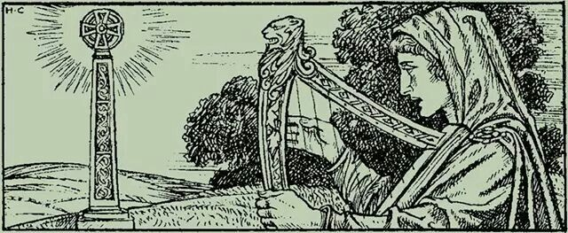
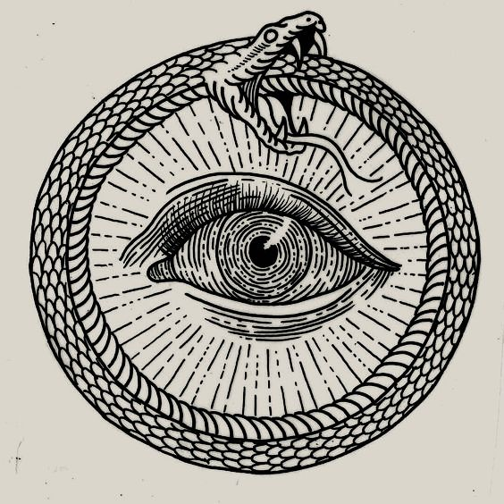
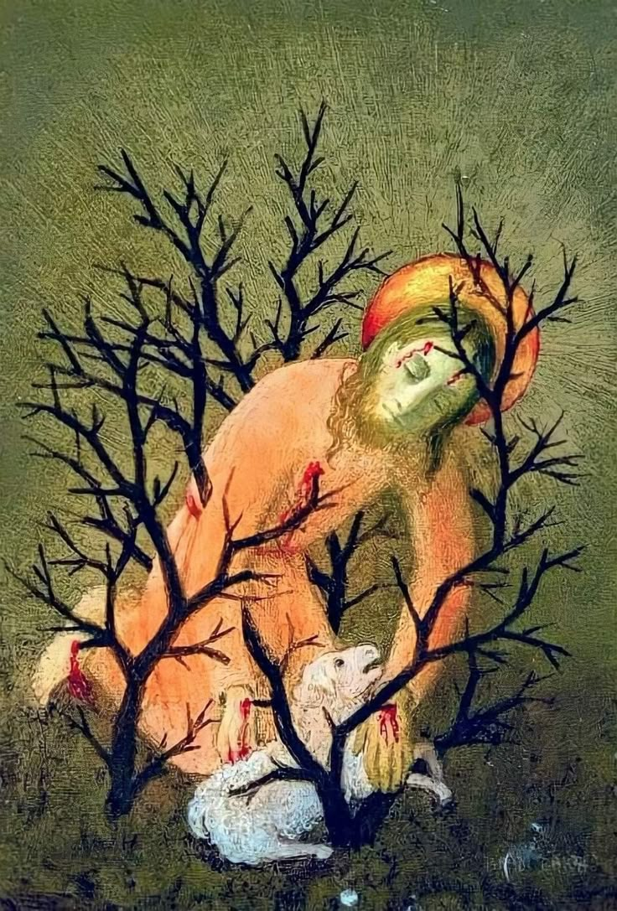

Raven's Eyes
I would like to preface this by stating two things; firstly, I do not hate Jesus or refuse his divinity, God forbid! I love Jesus as any Christian may claim to, as a brother firstly and a Lord after that. Secondly, I do not see myself as a Christian, not in any modern sense of the word at least (or ancient either, I suppose).
This is something I'm asked about a lot, in different forms but most commonly "Are you a Pagan?" or occasionally they will assume that I am in fact a Christ hating Pagan and "LARPing" (which is truly just to be sincere, and has no real meaning) as a great Pagan warrior and thus will say something along the lines of "Say Christ is King" or "Your gods are owned by marvel". It usually annoys me a touch, but there is some admiration to be had of the zealotry (though misplaced) of the online Christian.
I will clear up my thoughts on that man from Nazareth along with my thoughts on Christianity and why I believe that it errs from truth. I do not attack Christians here, nor do I wish to spark a Pagan vs. Christian debate in the readers head, I do not believe that you need to pick between them like sides in a game. There are aspects of Christianity that are true and close to God, and there are aspects of Paganism that are true and close to God. I will perhaps also write another time and produce a sister article to this, 'De Deorum' or 'On the Gods'. I wish no offence to the reader when I critique things, unless that offence will lead him to seek wisdom.
Of Jesus' divinity I have thought on a lot, I do believe him to be the son of God, a part of the Holy Trinity (in this case the Logos), and the "greater Nous" to say. By that I mean that as man is made in the Imagos Dei we are a sort of lesser God, our soul represents the Trinity and so our Nous (or intellect) is a lesser representation of the Logos that shares in the full glory of God, not lesser by any voidness or lack of God, but by the lens through which we use it. We can use our intellect to a much lesser capacity than God can, if you don't believe me then create the Universe, not that God is missing, but that our intellect is a reflection or pinhole view of a greater and more concentrated intellect. The fullness of that intellect is still intact, but it is not "reachable" for lack of a better word.
This is not just rambling, it is rather important to understanding my thoughts on Christ as the son of God. I fully believe that he is fully man and fully God, and I believe this to be entirely non-contradictory. Many Muslims (and even some Christians) will find themselves lacking in their ability to explain or understand this, and so will say stupid things like "How could man be God if man is limited?". I do not find myself to struggle on this, I find it very easy to explain. As our Nous is a lesser yet not incomplete Logos, so is the Son a lesser and yet not incomplete God. As are you. When Jesus talks of the Father as "greater than I" in the book of John, he does not make himself any less "God". But as God is ever-transcendent, what is not confined to the world is surely greater, though what is confined to the world is surely still God, and so he must also be the fullness of God. I apologise if I am not all too clear with my words here, it is tricky as I am not a good wordsmith.
"Ye have heard how I said unto you, I go away, and come again unto you. If ye loved me, ye would rejoice, because I said, I go unto the Father: for my Father is greater than I."
But there is something here that I disagree with Christians on. I do not at all believe this to be exclusive to Christ, nor do I believe that this divinity is what makes him special. St. Paul writes in the book of Romans that the same spirit that brought Christ from the dead is also in you! Likewise, in the first book of Corinthians does he write that our bodies are temples of God. This is not just flowery language to say that we are special, but a reminder that we are God's dwelling place, and if God dwells somewhere, then it is within Himself, for there is nothing but nothing, He cannot be where there is not, for where He is there must be. I AM THAT I AM, says He.
There is something else that makes Jesus distinguished among us men, then. I believe that is his lack of nothingness. Of course, it is difficult to describe in English, I have called God nothing and I will now go on to call sin nothingness. If you understand God to be no thing (though He is all things) and know sin to be something outside of the "things" of God (or God Himself), it may be easier to understand what I mean here. Jesus never sinned, this should not be controversial to any Christian I would hope. His nature was sinless, perfect, pure. Despite all sufferings, those same sufferings we know ourselves, despite all troubles, he never once fell to sin, or nothingness. He was as we are the fullness of God, yes, but never did he venture out into the depths of the nothingness of sin, whereas we men other often journey down those long winding paths, through that ever changing forest which traps us in it. We are therefore what I would call "God, but". We are God, but we also venture to His absence, we know what we should not know, we have eaten of that dreaded fruit. Jesus never did sin, and so he is not "God, but", but God. There is nothing more to the Nazarene but God's radiant splendor.
I hope I have cleared up the question of whether or not I hold Christ divine according to his proper majesty. For the answer is yes, of course I do!
This section is sure to get some annoyed, but I ask the reader to ask why it upsets them that one may disagree with them. I used to be incredibly angered by disagreement on religious matters, but I would wager that it was because I was insecure in my own knowledge then. Nietzsche writes that the judgement of a Christian is very often the result of his own guilty conscience. I speak from experience when I say that he was correct.
Firstly, I believe that Christianity represents an exoteric love for a set of rules and a rotted and hollowed out Jesus, one that has had his organs carved out that he may not go through any human processes, who has been beautified that his suffering may be distant, and who has been praised only as "the one who dies for our sins" and not in himself the crucified perfect man, enlightened in torment. At one point, I also made this mistake, I worshipped Jesus as the perfect man in every way, I had thought him to be untouchable because of this. I had believed it silly to imply he was anything less than the most beautiful man of greatest stature and perfect knowledge. But that is not my view now.
I believe Nietzsche writes that the ultimate act of love by God was to come to Earth not just as a human but as a Jew, to humble himself by becoming not any race, but the most rebellious and spiteful towards Himself. I agree, Christ's Jewishness is important, and not because it validates Jews, but because it does the opposite. Christ was a Jew (though not the modern mongrelised sort, to be clear) and in falling to the back of the race, he may say to the loser "watch me, I will go forth and win!", and rush past all the other athletes. It is by will that he may be perfect, or in this case win the race, and it is by will that the other racers, seeing him, can empty themselves out and become a vessel for that same spirit of haste.
The sort of "Say Christ is Lord!" posting represents a complete and utter betrayal of Christ, while yes, he is certainly Lord among us all, he is firstly brother to us all. He is our dearest kinsman, and not some distant royal in a palace that we aren't allowed in eating food we cannot share. He is our brother in who we can find familiarity and self, a mirror of ourselves to a perfect ideal.
Secondly, I believe that Christianity is too loose a term to be applied to any man of faith or friend of God. It puts you alongside the most dreadful scum and liars, telling you that you are like them, giving others the impression that you are the same as say, an egalitarian. Not so, the faithful must be against Christendom in my eyes, he must stand in the face of Rome and spit, or at least, scare Rome as Eckhart did. And this to some extent applies to Protestantism too, but Luther was the man who spat.
A few qualms I have that aren't important enough to have their own little sections are over-zealotry, anti-Traditionalism (capital T), and worship of reason. That is all for this section.
Jesus is not European, an argument could be made that other tribes than Judah were European, such as Dan or Ephraim, and I would be inclined to agree. But Jesus is not European. That is fine, it does not take away from what I will now go on to say.
Christ has become a part of Europe's founding mythos, the kings of today will claim that they are the sons of both Woden and David, whether true or not is irrelevant, myth does not have to be objectively true to be real. Europe's mythos is founded by a beautiful synthesis of Pagan and Christian ways, we have the brave 12 knights who seek the holy grail that grants eternal life, a fundamentally Pagan work, one that champions bravery and physical prowess, glory and pride! But it is Christian too, it talks of humility and lowering yourself, the 12 knights are in line with the disciples, the age of superstition passes and the knights go to find the cup of Christ (arguably another cup, but this is the common understanding).
If you take Paganism from Europe, we lose our beauty, if you take Christianity from Europe, we lose our understanding of self. What we are is not a Pagan people or a Christian people, we are perhaps Pagans who wear the crucifix, we know ourselves as great conquerors and we work still on honour, but we do it in the name of the crucified and not the hanged, both great men of incredible wisdom, and with very similar stories, but it is true that we have forgotten Woden's name. Perhaps a mistake, I believe we ought to know that great wanderer and his wisdom, but true nonetheless.
So we are certainly not removing Christ any time soon, nor will we kill the old gods. Let us be happy with what we have made out of both, I say.
“Paganism is the other Old Testament of the Church.”
I have not proof-read any of this, I am too tired to. If there are things that make no sense, I will sum it up here. I am not a Christian, but I revere Christ. I have no love for Christendom in faith, but in it's cultural fruits I see apples rather sweet. I refuse to attack the innocent Christ, I refuse to attack the old gods, I am that I am. ,-)